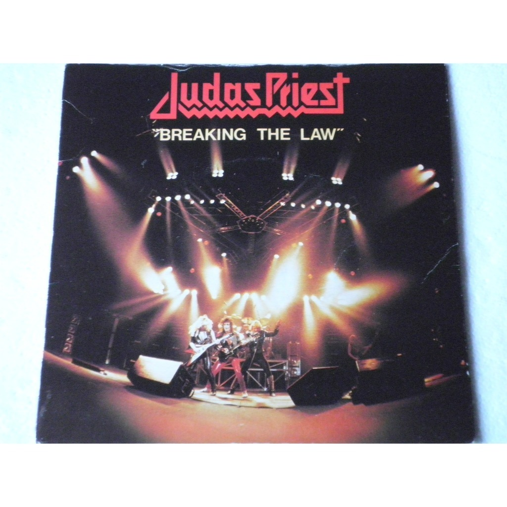

Sharing is Caring
Enabling Code Reuse for Backbone Models
Todd Kennedy / @whale_eat_squid
Tech Lead, Condé Nast Traveler
The Two Rules of Software Fight Club

borrowed from http://hdle12.tumblr.com/
Lets Face It...We're Lazy
But that's why we became programmers. Why do something over and over again when you can just write a small shell script to do it for you?
Hate That New Github Redesign?
function pr (){
ARGS=("$@")
# are we in a git repo?
GIT_BRANCH=$(git branch 2>/dev/null | sed -n '/^\*/s/^\* //p')
if ! git rev-parse --git-dir > /dev/null 2>&1; then
echo "You're not in a git repo..."
return 0
fi
GIT_REPO_NAME=$(basename `git rev-parse --show-toplevel`)
# make the pull request and get the ID
PULL_URL=$(git pull-request "${ARGS[0]}" -b CondeNast:development -h CondeNast:$GIT_BRANCH)
echo "Pull request made: $PULL_URL"
PULL_ID=$(echo $PULL_URL | cut -d/ -f 7)
}
My First Introduction to DRY
Const
Pi = 3.14;
#define PI 3.14;
public static final float PI = 3.14;
So what's this Backbone Thing?
But I still have to maintain models twice...
class Post(SQLObject):
body = UnicodeCol()
author = ForeignKey('users')
posted_on = DateTimeCol(default=datetime.datetime.now)
created_on = DateTimeCol(default=datetime.datetime.now)
tags = RelatedJoin('tag')
var Post = Backbone.Model.extend({
defaults: {
body: "",
author: 0,
posted_on: (new Date).toString(),
created_on: (new Date).toString(),
tags: []
}
});

But Client/Server Sharing is Difficult!
Ask my three year old if you can play with his cars, and you'll see why we so don't share a lot of code between the client and the server end.
It's almost like we speak a different language...
Ohai Node!

And yes, I am old enough to remember Netscape LiveWire and the insane <server> tag...
Now That We're on the Same Page
Lets start sharing code so we can stop repeating ourselves.
Models seems like a great place to start, right? We're going to need two things in order to make this work:
- A new Backbone.Sync method we can use on the server end
- A method of knowing which environment we're in
Luckily Backbone.Sync is Designed for this
Backbone.Sync has a very easy signature to replace:
Backbone.Sync = function(method, model, options);
So we need to take that signature and just write it so it reads/writes from the datastore. For a DB interface, we'll use MongoJS
And since it returns a jQuery $.Deferred on the front end, we'll make this "less surprises" and give you back a `then`-able promise from Q.
Stub Out Module...
function mongo_sync(server, collection){
return function (method, model, options){
var mongojs = require('mongojs');
var q = require('q');
var deferred = q.defer();
var db = mongojs(server)
.collection(collection);
switch(method){
}
return d.promise;
};
};
Switch since, well, I'm Lazy
switch(method){
case 'create':
break;
case 'update':
case 'patch':
break;
case 'delete':
break;
case 'read':
break;
default:
break;
}
Add in a Generic callback...
var callback = function(err, results){
if(err){
d.reject(err);
} else {
if(results === 1){
d.resolve(model.toJSON());
} else {
d.resolve(results[0]);
}
}
}
Create, Update, Patch and Delete
case 'create':
collection.insert(model.toJSON(), {safe: true}, callback);
break;
case 'update':
case 'patch':
collection.save(model.toJSON(), callback);
break;
case 'delete':
collection.remove(model.toJSON(), callback);
break;
Read is a Little More Complex
case 'read':
var _id = model.get('_id');
var query_params = {};
if (_id) {
query_params._id = mongojs.ObjectId(_id);
} else {
d.reject(new Error('You must provide an _id to lookup'));
}
collection.find(query_params, db_callback);
break;
default:
d.reject(new Error('Unimplemented'));
break;
A Word of Caution
You might have noticed this specifically doesn't think about collections.
That is an exercise left up to the reader.
We're Almost Home
Now onto number two: determining environment. There are a couple of things we need to consider for this:
- Is
processavailable? - Is
exportsavailable? - If we expect Browserify to work, we need to check
process.browseras well
Attach the Sync on the Server
if(typeof process !== 'undefined' &&
!process.browser &&
typeof exports !== 'undefined'){
Backbone.sync = mongosync(server, collection)
}
Don't forget: we need to make sure the sync method gets the datastore configuration!
And Use that to Return a Custom Model
module.exports = function(server, collection){
if(typeof process !== 'undefined' &&
!process.browser &&
typeof exports !== 'undefined'){
Backbone.sync = mongosync(server, collection);
}
return Backbone.Model.extend({idAttribute: '_id'});
}
Questions?
It's live in NPM and Bower!
- https://github.com/condenast/mongosync
- http://npmjs.org/packages/mongosync
npm install mongosync
bower install mongosync
Browserify, RequireJS and CommonJS aware!